_Portrait.png)
_Portrait.png)

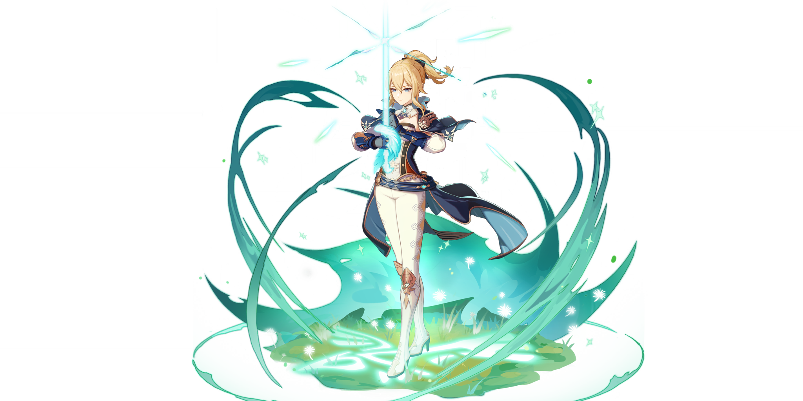
身为西风骑士团的代理团长，琴一直忠于职守，为人们带来安宁。虽然并非天赋异禀，但通过刻苦训练，如今的她已然能够独当一面。 当风魔龙的威胁开始临近，这位可靠的代理团长早已做好了准备，誓要守护蒙德。


活泼率直的少女，是蒙德城中唯一的侦察骑士。 擅长使用风之翼的安柏，连续三年蝉联蒙德城的「飞行冠军」。 作为西风骑士团的新星，今天的安柏依然活跃在第一线。

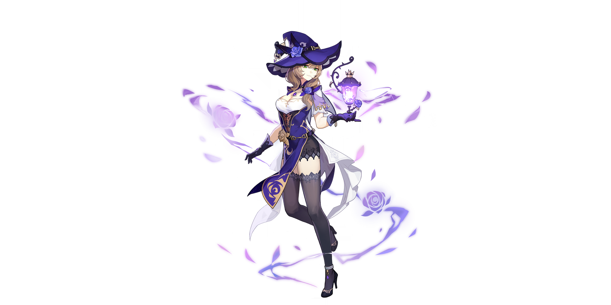
她是钟情于睡眠的知性魔女。 作为西风骑士团图书馆的管理员，聪明的丽莎总能以最有效的方式将遇到的问题统统解决。 虽然看似慵懒，但处变不惊的她似乎早已将一切尽数掌控。

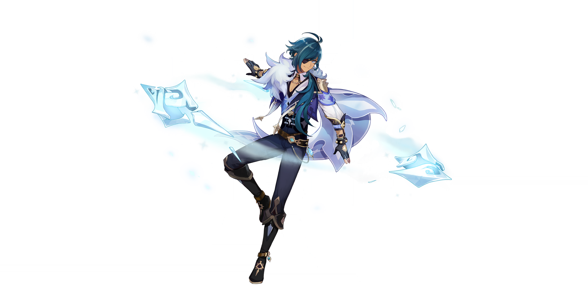
在西风骑士团里，凯亚是代理团长最信任的副手。凡是交托于他的任务，总能得到解决。 在蒙德城中，风趣幽默的他同样深受人们的喜爱，然而这位谈吐不凡的骑士隐约有着什么不为人知的秘密。


既是西风教会的祈礼牧师，又是蒙德城的闪耀偶像。 对于习惯了传统吟游诗人的蒙德来说，「偶像」是还不习惯的新生事物。但在蒙德，人人都爱芭芭拉。 这就是自由之都的自由精神——对大家投来的喜爱，芭芭拉是这样满怀感激地总结的。
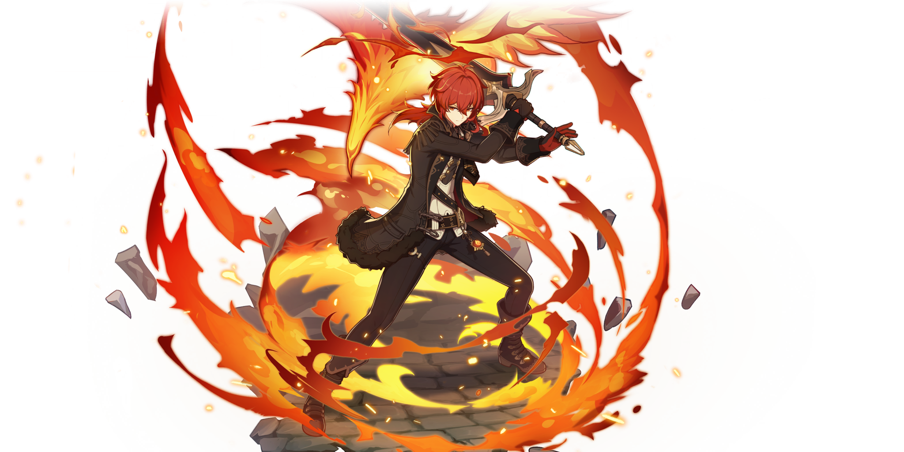
身为蒙德城第一富豪，风度翩翩的迪卢克总是以完美的贵公子形象示人。 然而他真实的一面，是秉承坚定信念的战士，他那「不惜一切守护蒙德」的意志犹如火焰般炽热，令他能以恐怖的攻势，毫不留情地将一切敌人击溃。

在蒙德坊间的传闻里，有人说他是被狼收养的弃婴，有人说他是狼灵的化身… 利爪与苍雷在飞驰，狼永远与荒野为伴。 时至今日，狼少年仍凭借他野兽般的直觉，在林间与狼群一起奔猎。
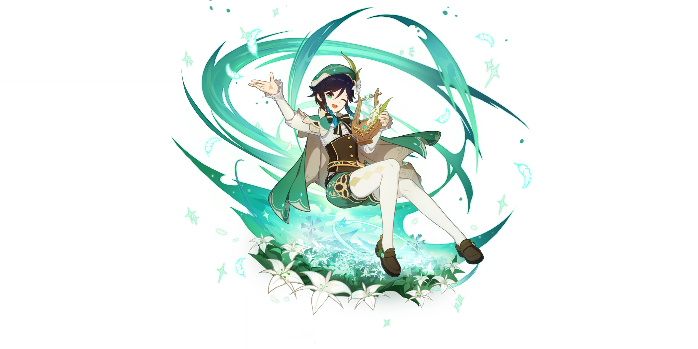
来路不明的吟游诗人，有时唱一些老掉牙的旧诗，有时又会唱出谁也没听过的新歌。 喜欢苹果和热闹的气氛，讨厌奶酪和一切黏糊糊的物质。 在引导「风」的元素力时，元素的塑形往往外显为羽毛，因为他很中意看上去轻飘飘的东西。

西风骑士团，火花骑士！永远伴随闪光与爆炸出现！ ——然后在琴团长严厉的目光注视下默默消失。 虽然新炸药的配方，很多都是在被关禁闭的时候想出来的…… 但如果不被关禁闭的话，就更好了。

蒙德城冒险家协会为数不多的年轻冒险家，一直被莫名的「不幸」所纠缠。 他所创立的「班尼冒险团」，在「不幸」的影响下不断有成员长期告假，目前仅有团长一人在队活动，已处于解散边缘。 但在班尼特诚恳的请求下，蒙德城冒险家协会接待员凯瑟琳小姐为他保留了「班尼冒险团」的编制，同时，也向他隐瞒了其他成员早已跳槽的事实。


和蒙德城大多数普通年轻人一样，诺艾尔梦想着成为一名光荣的西风骑士。 尽管还没有获得骑士资格，她仍以女仆的身份在骑士团里工作，努力学习着骑士的言行礼仪。 她始终相信，只要坚持努力，总有一天能穿上那副象征荣耀的甲胄。

自称「断罪之皇女」，与名为奥兹的漆黑夜鸦同行的神秘少女。 目前正以调查员身份供职于冒险家协会。 通过自己的特殊能力加上奇妙的个性，还有本人不愿意承认的努力，菲谢尔成为了冒险家协会调查员中的新星，且成功赢得了大家的认可。
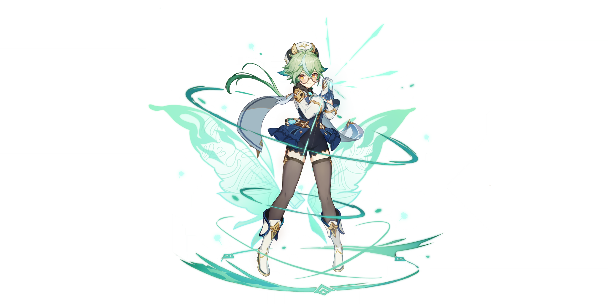
对世间万物抱有强烈好奇心的炼金术士，隶属于西风骑士团，是阿贝多的助手。研究方向为「生物炼金」。 她希望用炼金术改造既有的生命形态，让这个世界更加丰富多彩。 虽说改造过程中偶尔会出现一些过于奇异的产物，但总体而言，砂糖在「生物炼金」方面成就斐然。

神秘的少女占星术士，声称自己是「伟大的占星术士莫娜」，拥有与名号相符的不俗实力，博学而高傲。 尽管过着拮据、清贫的生活，但她坚决不用占卜来牟利…正是这种坚持，导致莫娜总是在为生计发愁。
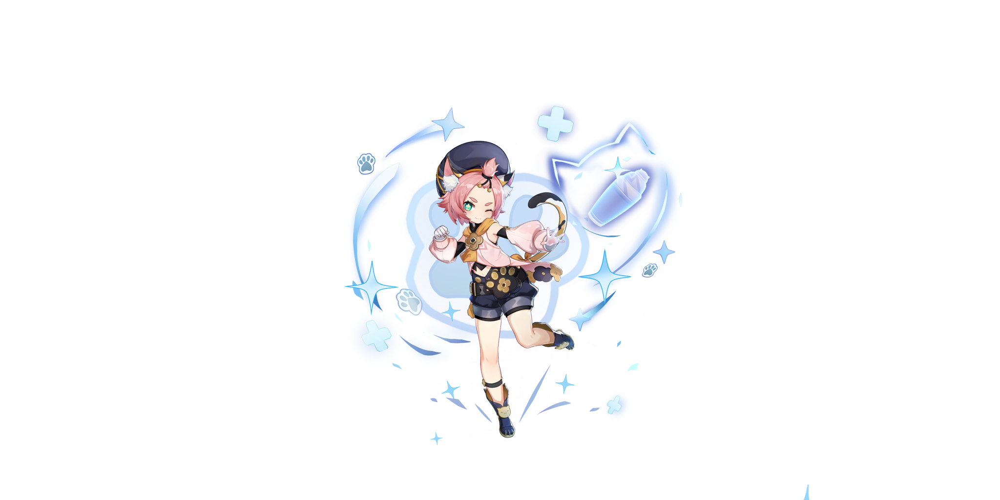
「猫尾酒馆」的超人气调酒师，蒙德酒业的超新星，传统势力的最大挑战者。 出身于清泉镇的猫耳猫尾少女，只要经迪奥娜之手调制过的酒类，都会变成难以想象的美味佳酿。 然而对于极度厌恶酒类的她来说，这到底是一种「祝福」还是「诅咒」呢？
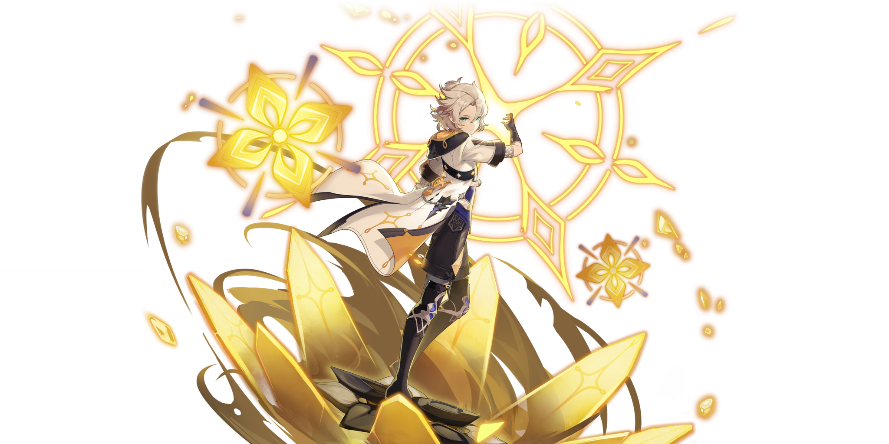
阿贝多——现定居蒙德的炼金术士，效力于西风骑士团。 「天才」、「白垩之子」或「调查队长」…他不怎么在意称号和名望，只专注于研究课题。 财富和人脉不是他的目标。他渴望驾驭的，是从古到今深藏于人类头脑中的无上知识。
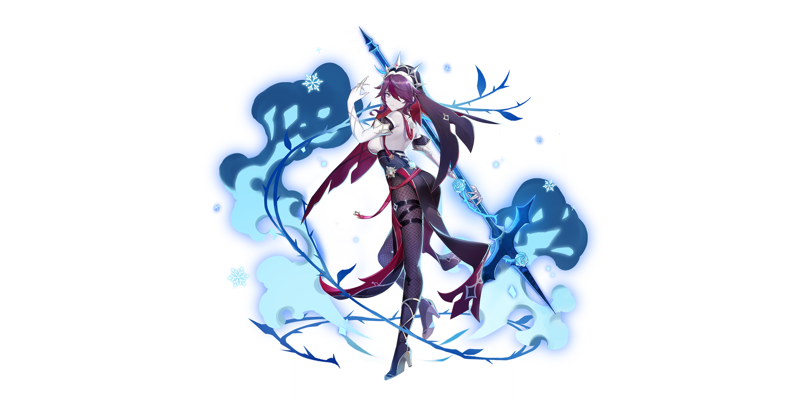
罗莎莉亚——蒙德城西风教会下属修女。 除了打扮哪里都不像神职人员的怪异修女。冷淡、锋利，如刀锋般锐利的女人。 行踪叵测，时常不告而别。身负着某种使命，但人们似乎并不明白她究竟代表着什么…

优菈——常年在外作战的「浪花骑士」，反叛的旧贵族末裔。 生于旧日宗室，身负罪恶血脉之人，的确需要独特的处世技巧，才能在偏见的高墙下安然行走。当然，这并不妨碍她与家族决裂，作为卓越的「浪花骑士」，在外游猎蒙德的敌人，完成她那意义独特的「复仇」。

守护璃月港的「三眼五显仙人」之一，妙称「护法夜叉大将」。 虽然外表看起来是一个少年人，但一些有关他的传说，已在古卷中流传千年。 对望舒客栈中一道名为「杏仁豆腐」的菜颇为喜爱。 究其原因，是因为「杏仁豆腐」的味道，与他曾经吞噬过的「美梦」十分相似。

「南十字」船队头领，在璃月有着相当的声望。 有人说她能开山劈海，有人说她善举剑引雷，还有人说，连可怖的冥海巨兽都不是北斗的一合之敌。 外人也许会把这些话当做夸张的玩笑，但那些曾与北斗同航的人却会说—— 「世上若真有什么冥海巨兽，那北斗一定能将它劈作两截。」

坐拥空中宫殿，有着大量传言的璃月权贵，脸上总是挂着优雅神秘的笑容。 作为「璃月七星」中的天权星，她不仅象征着权力与律法，也代表着财富与才智。
「万民堂」的新任大厨兼跑堂，对料理之道极具热情，最拿手的是麻辣菜肴。 年纪尚轻，但厨艺精湛，在吃虎岩的老饕之中颇有名气。 如果她要请你进行新品试吃，大可放心品尝，绝不会辜负你的期待，真的。

璃月港飞云商会的二少爷，自幼便以勤奋好学、待人礼貌闻名。 不过，即使是如此文雅的少年人，也有着动若脱兔的一面。

以璃月为中心，四处进行驱邪活动的云游方士。作为驱邪世家继承人，他自幼便有过人的绝技。然而，这种绝技并非学自师门，而是与生俱来的异能——「纯阳之体」。

药庐「不卜庐」的采药姑娘兼学徒。 因「仙缘」而拥有不死之身，行动时需要自己给自己下敕令。 七七的记忆力非常差，为了保证日常生活的顺利，她随身携带着一本笔记，写有各种各样的注意事项。 但在最不巧的那些日子里，她连「要看笔记」这件事都会忘记……

璃月七星之一，玉衡星。对「帝君一言而决的璃月」颇有微词——但实际上，神挺欣赏她这样的人。 她坚信与人类命运相关的事，应当由人类去做，而且人类一定可以做得更好。为了证明这一点，她比任何人都要努力。
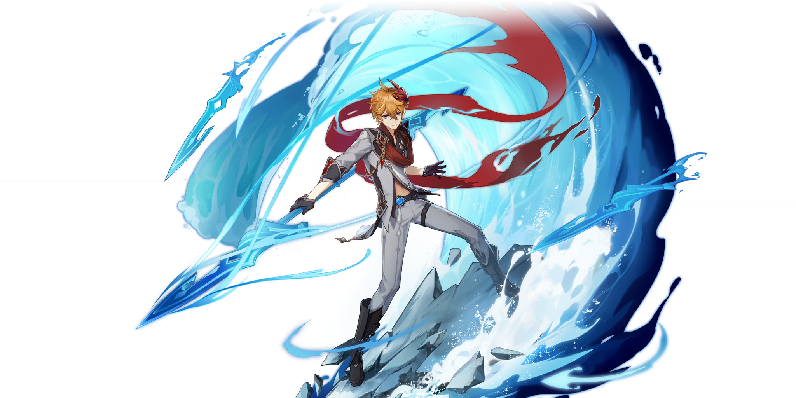
达达利亚——来自寒冰之国，心思变幻莫测的客人。 不必猜测他的想法，也无需质疑他的来意。只要记住：这副稚气未脱的外表下暗藏的，是锤炼到极致的战士之躯。

应「往生堂」邀请而来的神秘客卿。样貌俊美，举止高雅，拥有远超常人的学识。 虽说来历不明，却知礼数、晓规矩。坐镇「往生堂」，能行天地万物之典仪。

在璃月港，摇滚属于新兴艺术，辛焱则是这门艺术身先士卒的践行者。 她用音乐和热情歌颂着对「成见」的反抗，想要唤醒劳于世间昏昏沉沉的灵魂。 如果有机会，请千万不要错过她的演出。
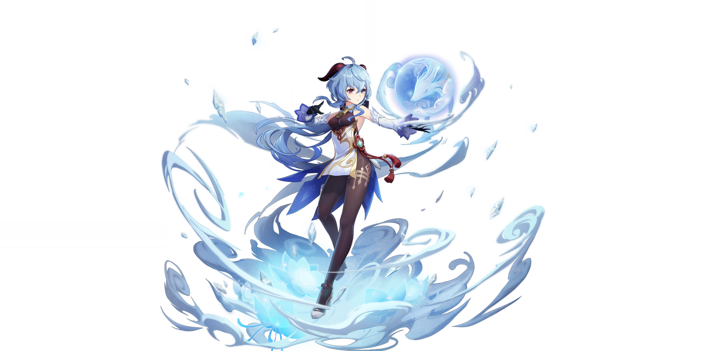
璃月七星的秘书，体内流淌着人类与仙兽的血脉。 天性优雅娴静，但仙兽「麒麟」温柔的性情与坚定毅重的工作态度毫无冲突。 毕竟，甘雨坚信自己所做的一切工作都是为了践行与帝君的契约，谋求璃月众生的最大福祉。

胡桃——「往生堂」第七十七代堂主，掌控着璃月葬仪事务的重要人物。 尽心尽力地为人们完成送别之仪，维护着世间阴阳平衡之道。 除此以外还是个神奇打油诗人，诸多「杰作」被璃月人口口相传。

烟绯——身负半仙之血，能力一流的律法咨询师。 她在循途守辙与通权达变之间寻得了只属于自己的完美平衡点，凭借律法咨询师的独特身份和自成一派的经验手段，悉心守护着璃月的契约天平。
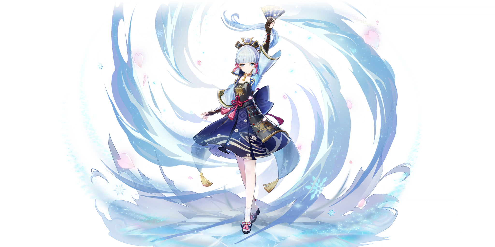
稻妻「社奉行」神里家的大小姐。端庄文雅，聪慧坚韧。 待人接物真诚又得体，深受稻妻民众爱戴，贵有「白鹭公主」之名。
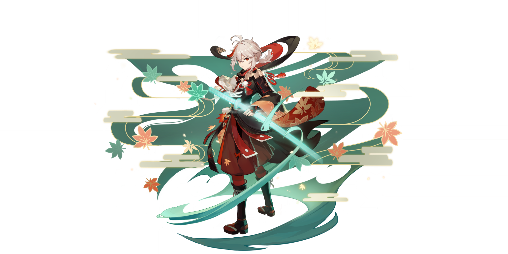
稻妻出身的浪人武士。为人谦和，个性温顺。 年轻潇洒的外表下埋藏着许多往事。看似随性，心中却有独属于自己的行事准则。

才华横溢的烟花工匠，「长野原烟花店」的现任店主，被誉为「夏祭的女王」。 热情似火的少女。未泯的童心与匠人的执着在她身上交织出了奇妙的焰色反应。

早柚——隶属于秘密组织「终末番」的特别忍者，对睡眠和长高有着异乎常人的追求。 掌握一切可用于逃跑、隐蔽的忍术，以此为自己创造偷懒睡觉的机会。 如此神奇的手段，或许会有意想不到的用途。
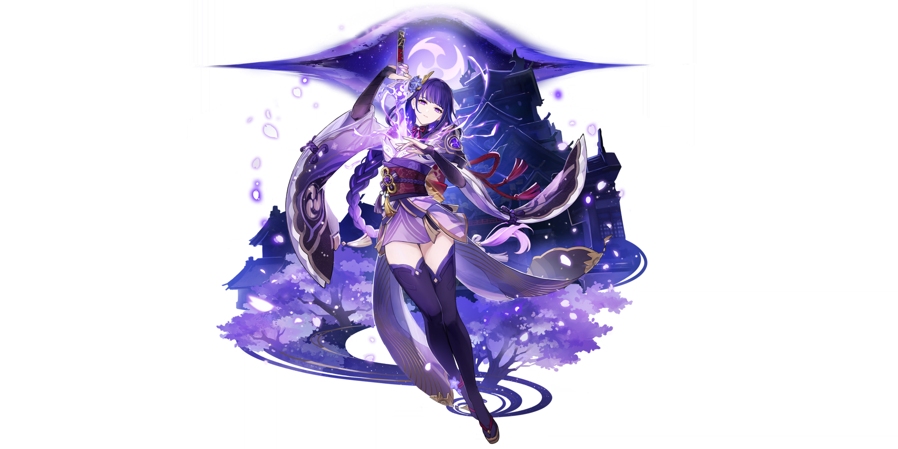
请敬请期待！

请敬请期待！

请敬请期待！